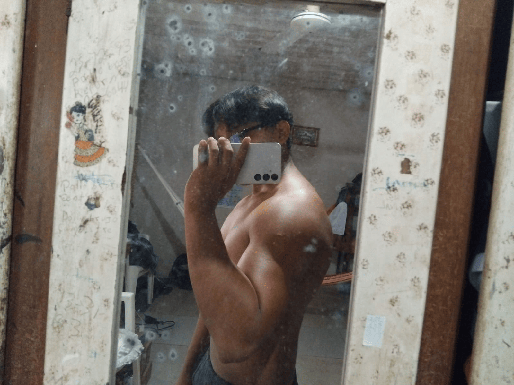

Hola, mi nombre es Josue Gerardo Medina Canche, y quiero contarte un poco sobre mí. Soy un apasionado de la calistenia, la música y el voleibol. Desde pequeño, la vida me ha llevado a conectar con muchas cosas que me apasionan, y cada una de ellas tiene una razón muy especial.
La calistenia, por ejemplo, llegó a mi vida cuando era muy joven. Siempre me llamó la atención cómo las personas podían desarrollar su fuerza y resistencia utilizando solo su cuerpo. Recuerdo que de niño, en las vacaciones, solía ver a algunas personas hacer ejercicios en los parques, y me maravillaba ver cómo alcanzaban niveles de flexibilidad y fuerza impresionantes. Con el tiempo, comencé a practicar por mí mismo, y no solo descubrí un deporte, sino una forma de vida que me ayuda a mantenerme saludable tanto física como mentalmente.
La música siempre ha sido otro pilar importante de mi vida. Desde pequeño, mis padres me expusieron a diferentes géneros musicales, y eso despertó en mí un amor por los sonidos, las melodías y las letras. Mi infancia estuvo llena de momentos musicales: desde cantar en las fiestas familiares hasta descubrir nuevos artistas. Hoy en día, la música es mi refugio, y siempre busco nuevas canciones para expresar emociones que a veces las palabras no alcanzan a describir. La música me ha permitido sentirme libre y conectar con mi interior de una manera única.
El voleibol es otro de los grandes amores de mi vida. De niño, siempre fui muy activo, y el voleibol me dio la oportunidad de canalizar esa energía en algo constructivo. A medida que fui creciendo, me di cuenta de que este deporte no solo me enseñó a trabajar en equipo, sino que también me enseñó a ser disciplinado, a ser perseverante y, sobre todo, a disfrutar de la compañía de amigos y compañeros. Es un deporte que me ha dado muchas alegrías y, al mismo tiempo, ha sido una gran lección de trabajo en equipo.
Pero más allá de las actividades físicas y los pasatiempos, hay algo que también me define profundamente: mi amor por Goku, el anime y las películas de terror. De pequeño, siempre me encantó ver los episodios de Dragon Ball Z. Cada batalla de Goku me motivaba, me enseñaba sobre la perseverancia, la superación y el valor. El personaje de Goku se convirtió en un verdadero modelo a seguir, no solo por su fuerza, sino por su capacidad de enfrentarse a los desafíos con una actitud positiva y sin rendirse. Me identifico con su deseo de siempre mejorar y ser más fuerte, y esa filosofía se ha reflejado en mi vida diaria, en la manera en que enfrento mis propios desafíos. El anime, en general, ha sido una parte integral de mi desarrollo. Las historias de personajes que se esfuerzan por superar sus limitaciones, que enfrentan batallas no solo externas, sino internas, me han enseñado muchas lecciones sobre la vida. El mundo del anime no solo me permitió escapar de la realidad durante mi infancia, sino que también me ofreció una fuente constante de inspiración.
Las películas de terror son otra de mis grandes pasiones. Aunque algunos pueden verlas como algo negativo o aterrador, para mí son una forma de disfrutar del suspenso y la adrenalina de una manera controlada. Recuerdo que, de niño, me encantaba ver películas de terror en la oscuridad, retándome a no asustarme. Con los años, me di cuenta de que mi amor por este género no solo era por el miedo, sino por la emoción de enfrentar lo desconocido y cómo estas historias exploran los miedos humanos más profundos.

A lo largo de mi vida, estas pasiones han sido el motor que me ha impulsado a seguir adelante. Cada una de ellas tiene una raíz profunda en mi infancia y me ha formado como la persona que soy hoy. Me considero una persona sociable, con un corazón lleno de energía positiva y siempre dispuesta a compartir con los demás. Mi vida está llena de aprendizajes, y cada día busco aprovechar al máximo lo que me apasiona, sin dejar de lado los valores que me han acompañado desde siempre: el esfuerzo, la dedicación y la perseverancia.
Es por todo esto que me considero alguien con un buen corazón, alguien que siempre busca ayudar a los demás y que disfruta de las pequeñas cosas de la vida. Y todo esto, en gran medida, se lo debo a mis pasiones, que me han acompañado desde que era un niño, y a las experiencias que he vivido mientras las compartía con las personas que más quiero.
Mis pasatiempos favoritos son:
Por favor, llena el formulario para ponerte en contacto conmigo. Te responderé lo antes posible.